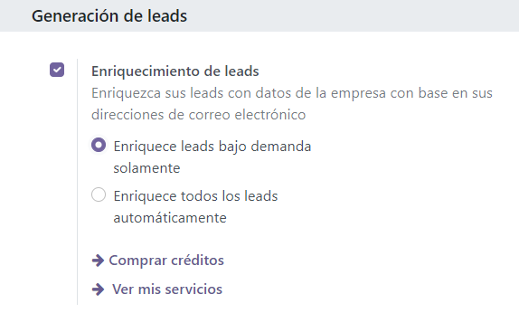
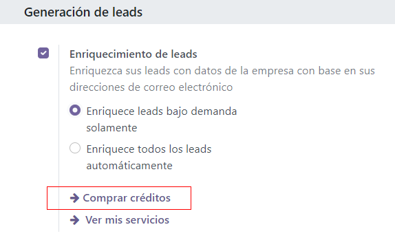

Lead enrichment¶
Lead enrichment is a service that provides business information for a contact attached to a lead. Lead enrichment is an In-App Purchase (IAP) that requires credits to use, and is available for existing leads in an Odoo database.
The information provided by lead enrichment can include general information about the business (including full business name and logo), social media accounts, Company type, Founded information, Sectors information, the number of Employees, Estimated revenue, Phone number, Timezone, and Technologies Used.
Note
Enterprise Odoo users with a valid subscription get free credits to test IAP features before deciding to purchase more credits for the database. This includes demo/training databases, educational databases, and one-app-free databases.
Important
The leads feature must be activated in the CRM settings page in order to use lead enrichment. To access the CRM settings, navigate to . Under the CRM section activate the Leads option and click Save.
Lead enrichment set up¶
To set up lead enrichment in the CRM application, navigate to . Then, under the Lead Generation section, tick the checkbox next to Lead Enrichment, and select either Enrich leads on demand only or Enrich all leads automatically. Click the Save button to activate the changes.
Enrich leads¶
Enrichment of leads is based on the domain of the email address of the customer set on the lead. There are two different ways that a lead can be enriched: automatically or manually.
Automatically enrich leads¶
During set up, if Enrich all leads automatically was selected on the CRM Settings page, then no action needs to be taken by the user to enrich the lead. A scheduled action runs automatically, every sixty minutes, and enrichment occurs on leads, after a remote database is contacted.
Tip
To access the cron that runs for the automatic lead enrichment, activate developer mode, and navigate to . In the Search… bar, type in CRM. Click into the
result labeled CRM: enrich leads (IAP), and make any necessary adjustments. In the
Execute Every field, enter a value greater than, or equal to, five minutes.
Manually enrich leads¶
If the Enrich leads on demand only option was selected on the CRM Settings page, when activating Lead Enrichment, each lead that a user wishes to enrich must be manually enriched. This is achieved by clicking the Enrich button in the top menu of the lead.
The same information will be retrieved at the same IAP credit cost (one per enrichment). This method of enrichment is useful when every lead does not need to be enriched, or cost is an issue.
Tip
Manually enrich leads in bulk using the list view. First, navigate to , and click the list view button (☰ (three horizontal lines) icon). Next, tick the checkboxes for the leads that should be manually enriched. Finally, click the ⚙️ Action icon, and select Enrich from the resulting drop-down menu. This can also be achieved from the My Pipeline page. To do so, simply open the CRM app, or navigate to . Either route reveals leads and opportunities on the Pipeline page.
Pricing¶
Lead enrichment is an In-App Purchase (IAP) feature, and each enriched lead costs one credit.
Note
See here for full pricing information: Lead Generation by Odoo IAP.
To buy credits, navigate to . In the Lead Generation section, under the Lead Enrichment feature, click on Buy Credits.
Credits and balances may also be purchased by navigating to the . In the Contacts section, under the Odoo IAP feature, click on View My Services.
See also
Important
When collecting a company’s contact information, make sure to be aware of the latest EU regulations. For more information about General Data Protection Regulation, refer to: Odoo GDPR.